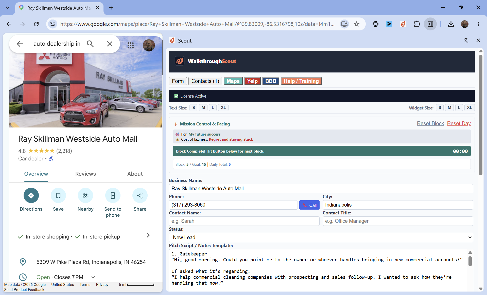

Land 3 to 5 Extra Commercial Walkthroughs Every Week... Without Buying Retyped Lead Lists or Hiring Expensive Callers.
Running crews and managing jobs leaves zero time for messy spreadsheets, 50 open tabs, or outdated lead lists. Walkthrough Scout pulls business details straight off Google Maps, Yelp, and BBB into your browser side-panel so you can run a calm 30-minute dial sprint, log notes, and set callback reminders without leaving the tab.
🔒 Free 15-minute 1-on-1 onboarding with Floyd included • Cancel anytime

Built for the Owner Who Does It All
Managing crews, checking job sites, and doing quotes yourself? When you have fewer than 15 employees, you don't have four hours a day to sit in front of a computer. You need a simple 30-minute daily routine you can run between site visits.
Watch a Demo.
Outreach doesn't require a high-pressure pitch—it works best when it's calm, consistent, and organized. Watch how small cleaning companies use Walkthrough Scout to book walkthroughs steadily.
Walkthrough Scout keeps your talking points, notes, and callback reminders visible right next to Google Maps so you never fumble during a call.
Want Me to Personally Help You Set It Up & Work Your First Dial?
You don't have to figure this out alone. When you join today, you get a direct 1-on-1 15-minute setup session with me (Floyd). We'll configure your Chrome side-panel together and answer any questions about your calling routine before you hang up.
- ✔ Personal side-panel setup and configuration
- ✔ Monthly sales training sessions included so you're covered if calling feels intimidating
- ✔ Zero technical headache
Built Because Existing Tools Were Too Pricey or Too Complicated
I'm Floyd—a JavaScript developer with years of hands-on sales and commercial cleaning appointment-setting experience.
When I was making calls to book commercial walkthroughs, the available options were frustrating: either expensive tools pushing recycled lead lists or bloated enterprise CRMs that took weeks to configure.
I didn't want messy spreadsheets, 50 open tabs, and disconnected notes. So I built Walkthrough Scout to keep outbound prospecting simple and practical.
Master the system yourself first—then hand it off.
Learn the simple 30-minute daily routine yourself first. Once you see how straightforward it is, handing that exact workspace over to someone else on your team—like a helper earning extra commission or a caller you bring on—becomes much easier.
— Floyd, founder & developer of Walkthrough Scout
Don't Start with 4 Hours on the Phone. Start with 30 Minutes.
Most cleaning owners stall out on outbound calls because they try to force a massive marathon on day one and burn out. Scout helps you stack small, repeatable daily blocks instead.
30 Mins / Day
Set a single 30-minute sprint block. Pull 15 local prospects off Google Maps and make your calls before your daily jobs or walkthroughs pick up.
Two 30-Min Blocks
Once your first block feels natural, add a second short block later in the day to follow up on callbacks and track walkthroughs.
Up to ~2 Hours / Day
Keep your commercial pipeline moving in short daily sessions—and when you're ready, hand the exact Scout workspace to an internal caller or assistant.
Less Tool-Juggling. More Walkthroughs Booked.
Cut down on hesitation, work calls systematically, and keep every callback visible.
Capture Local Prospects Instantly
Grab business names, addresses, and phone numbers off Google Maps, Yelp, and BBB into your workspace without retyping spreadsheets.
30-Minute Sprint Timers
Ease phone hesitation with time-boxed sprint blocks and dial tracking so you can knock out a quick session and get back to your day.
Callbacks That Never Get Lost
When someone asks you to call back next week or next month, save your notes and reminder right away so follow-ups don't slip through the cracks.
Cut Unnecessary Windshield Time
Check locations and property layouts on Google Maps before driving across town so your in-person walkthroughs are better qualified.
Self-Serve Workspace or Custom Tech Support
Walkthrough Scout
Built for owners or callers who want a fast browser workspace to capture local businesses, keep call notes, and track callbacks without heavy software.
- ✓ Chrome extension side-panel workspace
- ✓ Google Maps, Yelp & BBB prospect capture
- ✓ Call notes, callback reminders & sprint timers
- ✓ Free 15-min 1-on-1 setup session with Floyd
Web, Automation & AI Chatbots
Need help beyond the prospecting workspace? Book a time to talk if you want custom web development, workflow automation, AI chatbots, or graphics.
- ✓ Custom web development & landing pages
- ✓ Workflow & CRM automation setup
- ✓ Website AI chatbots & follow-up flows
- ✓ Practical graphics & digital setup
Your Prospecting Workspace. $49 a Month.
No separate lead-list subscription required. Free 1-on-1 onboarding included.
Cancel anytime in one click. Zero long-term contracts.
- ✓ Walkthrough Scout Chrome extension
- ✓ Business contact capture (Google Maps, Yelp, BBB)
- ✓ Side-panel calling workflow, notes & callback reminders
- ✓ Sprint timers & dial tracking
- ✓ Pricing calculator
- ✓ Sales video training & script templates
- ✓ Free 15-minute 1-on-1 setup call with Floyd
Optional 1-on-1 coaching or custom services are separate and never required to use Walkthrough Scout.
Frequently Asked Questions
Does Scout book appointments automatically?
No. You or your caller make the calls and have the conversations. Walkthrough Scout organizes your local prospects, notes, sprint timers, and callback reminders so follow-ups stay organized.
Do I need to buy a separate lead list?
No separate lead-list subscription is required. Search local businesses on Google Maps, Yelp, or BBB and capture available contact details straight into your side-panel workspace.
Who should make the calls?
Start with a 30-minute daily block yourself to build the habit and hear how real conversations go. Once the routine feels natural, you can easily hand the workspace to someone on your team or a dedicated caller.
Do you help with other services like web dev, automation, AI chatbots, and more?
Yes. Alongside Walkthrough Scout, we also offer custom web development, workflow automation, AI chatbots, and graphics. Book a Time to Talk →
What if I'm scared to make cold calls or feel like I can't do sales?
That's very common among cleaning owners—especially when you're used to focusing on the actual cleaning work. We host monthly sales training sessions so you can pick up practical habits at a steady pace and feel supported. If talking first would help you decide, you can also book a time to talk.
How can I reach you with a question before getting started?
You can reach me at floyd@walkthroughscout.com or book a quick call on Calendly.
Make Your Next Prospecting Session More Organized.
Find local commercial prospects, work your dials systematically, and book more walkthroughs every week.
Get Walkthrough Scout — $49/moFree 1-on-1 setup session with Floyd included. Cancel anytime.